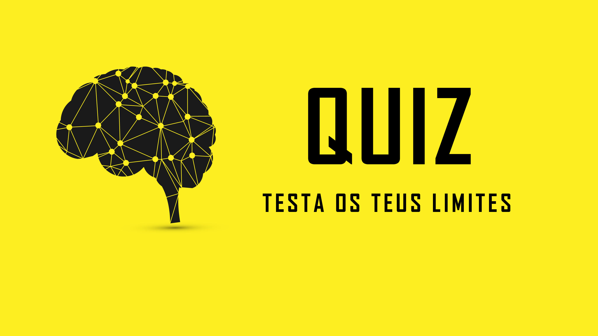
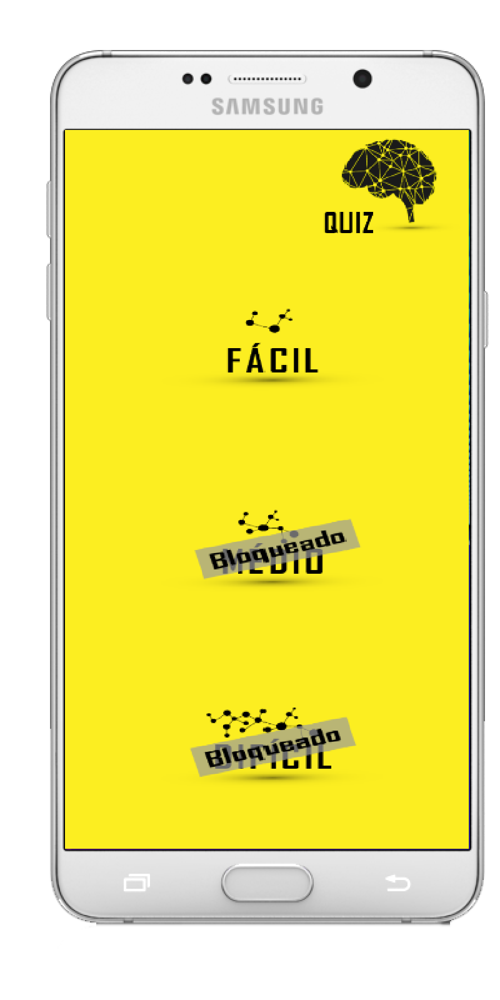

Sobre o Jogo
Um Quiz é um jogo no qual os jogadores tentam responder corretamente a questões que lhes são colocadas.
Como Jogar
- Quando abrir o jogo, vai encontrar o seguinte menu iniciar.
- Poderá desligar a música (canto inferior esquerdo), e também consultar as informações (canto inferior direito).
- Para começar o jogo, clique botão iniciar.
- Quando clicar no botão iniciar, irá aparecer o menu dos níveis.
- Só terá o nível fácil desbloqueado.

- Clica no botão Fácil e começa o jogo. Terá 25 perguntas para responder, se errar alguma pergunta perderá uma oportunidade, tendo 3 em cada nível.
- Se errar 3 vezes, o jogo acaba, e poderá voltar a jogar.

Download
Para fazer o Download do jogo, clique no botão em baixo:
Após clicar no botão, o jogo será transferido para o seu telemóvel para o poder instalar.